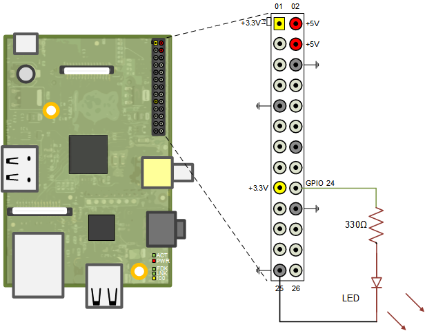
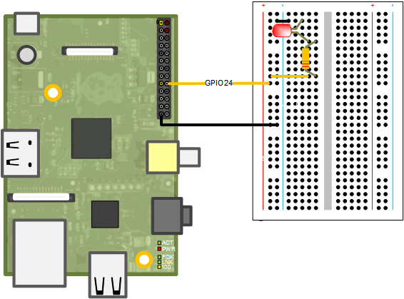
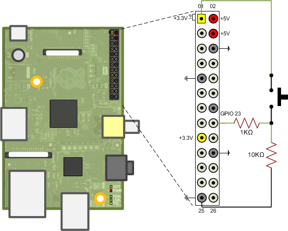

Working with Raspberry Pi Hardware
This example shows you basics of working with Raspberry Pi® Hardware.
Contents
Introduction
Raspberry Pi is a single board, credit-card size computer that can run Linux®. Raspberry Pi hardware has low-level interfaces intended to connect directly with external devices such as A/D converters, sensors, motor drivers, etc. You can take advantage of these low-level interfaces to develop meaningful real-world applications. The Raspberry Pi support package includes MATLAB command-line interfaces to communicate with external devices connected to Raspberry Pi hardware. You can, for example, turn a LED connected to one of the GPIO pins on or off or sense the position of a push button from the MATLAB command prompt.
Most of the low-level interfaces of Raspberry Pi hardware are not plug-and-play. To use these low-level interfaces, you must have a sound understanding of basic electrical concepts. If you mis-wire a GPIO pin, for example, you risk losing a GPIO pin, and, in some cases, your Raspberry Pi hardware.
This example is intended to familiarize you with low level interfaces of the Raspberry Pi hardware, establish sound practices for wiring and connections when working with external electrical components and use MATLAB command-line interface for Raspberry Pi hardware to control simple devices like LEDs, push buttons, and relays.
Prerequisites
- It is helpful to complete the Getting Started with MATLAB Support Package for Raspberry Pi Hardware example.
Required Hardware
To run this example, you need the following hardware:
- Raspberry Pi hardware
- A power supply with at least 1A output
- Breadboard and jumper cables
- Red LED
- 330 Ohm, 1 kOhm and 10 kOhm resistors
- A push button or switch
Overview of Raspberry Pi Hardware
In addition to USB, Ethernet, HDMI, and Audio Out ports, the Raspberry Pi hardware has expansion headers that offer general purpose digital I/O, SPI, I2C, and serial UART. Depending on the revision of your Raspberry Pi hardware, the available digital I/O pins, pin-outs for I2C, SPI, and serial ports change.
All versions of the Raspberry Pi hardware have one or more expansion headers. You can use some of the pins on the expansion headers for digital I/O. To see a diagram of the pins of your Raspberry Pi hardware, use showPins() method of raspi object.
rpi = raspi(); showPins(rpi);
The showPins() method displays a MATLAB figure showing a diagram of pins available. The raspi object determines the version number of your Raspberry Pi hardware and displays the correct pin diagram for your version of the board. Raspberry Pi Model B+ board has more I/O pins exposed than Raspberry Pi Model B board.
The GPIO pins use 3.3 volt logic levels and are not 5 volt tolerant. There is no over-voltage protection on the CPU chip. A CSI (camera serial interface) is available so that you can connect an available Camera Board. You can use some of the pins available on the Raspberry Pi hardware for multiple purposes. For example, if you do not need to use SPI interface, you can use SPI pins as general purpose digital I/O. The pins marked as SDA0 and SCL0 are preset to be used as an I2C interface. There are 1.8 kOhm pull-up resistors on the board for these pins.
You can power external components using 3.3 volt and 5 volt power pins on the expansion headers. The maximum permitted current draw from the 3.3 volt pins is 50 mA.
Best Practices and Restrictions
- Do not connect electrical components to Raspberry Pi expansion headers while Raspberry Pi hardware is running. If you want to connect an electrical component, turn off your board first. Instructions for turning off you board are provided below.
- Raspberry Pi pins use 3.3 volt logic levels. Do not connect devices using 5 volt logic levels directly to the Raspberry Pi pins.
- Use logic level converters when interfacing devices using 5 volt logic levels to Raspberry Pi hardware.
- Do not short a GPIO pin configured as digital output.
- Do not short 5 volt power pins to any other pin on the expansion header. Be extremely careful when working in the vicinity of 5 volt power pins.
- Do not touch bare expansion header pins while Raspberry Pi hardware is on. You can accidentally short some of the pins.
Turning Your Raspberry Pi Hardware On and Off
Raspberry Pi runs a Linux operating system. Turning off the power can result in corrupting the operating system image on the SD card. To turn off your board, first shut down the Linux operating system by executing the following:
system(rpi, 'sudo shutdown -h now'); clear rpi
You can also execute the preceding command above on an interactive command shell as described in the Getting Started with MATLAB Support Package for Raspberry Pi Hardware example. To turn off your board in MATLAB Online, you must execute the following Linux command from the command shell on the Raspberry Pi. Access the command shell remotely via SSH with PuTTY, as described in Remote Access.
$sudo shutdown -h now
After executing the command, wait until the operating system shuts down all LEDs on the board except for PWR LED. Then, unplug the power cable from the board. To restart your board, plug the power cable back into the board. It takes approximately a minute for the board to fully reboot.
Working with LEDs
A light-emitting diode (LED) is a semiconductor light source. An LED has two legs. One is called anode and the other is called cathode. The two legs of LED have different names because LED works only in one direction. The anode leg is longer than the cathode leg, and must be attached to the positive voltage terminal while the cathode is attached to the negative voltage terminal. The current going through an LED goes from anode to cathode. If you wire an LED backwards, it does not light up.
LEDs come in different colors and sizes. Common sizes are 3mm, 5mm and 10mm and refer to the diameter of the LED. A red LED, when it is on will have a forward voltage anywhere from 1.8 volts to 2.5 volts. When a LED is on, it behaves like a diode and passes a large amount of current that may produce enough heat to cause the LED to burn out. Therefore, you should always use a current-limiting resistor when working with an LED.
In this example, you connect a red LED across a GPIO pin and turn the LED on and off using the MATLAB command-line interface. You need a red LED and a 330 Ohm resistor. You connect the LED and the resistor as shown in the circuit diagram.

Here is another view showing the actual connections on a breadboard.

The anode (positive or long leg) is connected to the GPIO24 pin and the cathode is connected to the ground through the resistor. Once you make the connections, execute the following command at the MATLAB command prompt to turn the LED on.
clear rpi
rpi = raspi();
writeDigitalPin(rpi, 24, 1);
The writeDigitalPin() method configures GPIO pin 24 as output and sets the logical value of the digital pin to one (logic high) causing 3.3 volts to be output at the pin. Writing a zero to a digital pin results in an output of logic low, which is digital ground in this case.
Make the LED "blink" for 10 seconds.
for i = 1:10 writeDigitalPin(rpi, 24, 1); pause(0.5); writeDigitalPin(rpi, 24, 0); pause(0.5); end
Working with Pushbuttons
A push button is a simple switch mechanism. When pressed or in closed position, the legs of a push button are shorted allowing electrical current to pass. When in open position, the switch does not conduct electricity. You can use a digital input pin to sense if the push button is in an open or closed position.
For this task, you need a breadboard-friendly pushbutton and 1 kOhm and 10 kOhm resistors. Connect the push button to GPIO pin 23, as shown in the following circuit diagram.

In this circuit, the GPIO pin sees ground when the push button is not pressed. When the pushbutton is pressed, the GPIO pin sees 3.3 volts. You can read the position of the push-button using the readDigitalPin() method.
readDigitalPin(rpi, 23)
Push button Controlled LED
Blink the LED rapidly for 1 second whenever the push button is pressed.
for i = 1:100 buttonPressed = readDigitalPin(rpi, 23); if buttonPressed for j = 1:10 writeDigitalPin(rpi, 24, 1); pause(0.05); writeDigitalPin(rpi, 24, 0); pause(0.05); end end pause(0.1); end
Summary
This example introduced the workflow for working with GPIO pins. You learned how to connect LEDs and push buttons to GPIO pins.